5 What labels work?
This chapter is under review and may need revisions.
5.1 Overview
MOSAIKS is a designed to be useful for predicting anything that may be visible in satellite imagery. Some things are easier to predict than others, but the system is designed to be flexible. For instance, some variables can be seen directly in the imagery itself, such as forest cover, which clearly emits a visible green signal. Other outcomes can only be predicted through indirect relationships between imagery data and labels. For example, income and housing price are not themselves directly visible in imagery, but their values can be reliably estimated from objects (e.g., cars), textures (e.g., roofing material), and colors (e.g., grey road infrastructure) contained within the imagery.

In this chapter we will discuss a new working paper from Proctor et al. (2025) that explores the question: What Can Satellite Imagery and Machine Learning Measure? This paper investigates over 100 different outcomes, reporting predictive performance for each using MOSAIKS. We will discuss the results of a selection of these outcomes in detail, and provide a brief overview of the rest. Of course, this list of outcomes is not exhaustive and reported performance can differ substantially across contexts and in particular with varying quality of ground truth data. We show these results as an initial investigation of what might be possible with SIML using MOSAIKS, but encourage users to conduct their own experiments as results are likely to differ in new settings. The pre-print of Proctor et al. will be posted here when publicly available.
5.2 What makes good label data?
Before we get started, it’s important to understand what makes good label data. For optimal performance with MOSAIKS, label data should have several key characteristics:
- Accurate geographic location information
- Appropriate spatial resolution (typically ≥1km²)
- Reasonable temporal alignment with imagery features
- Sufficient sample size (generally ≥300 observations; the more the merrier!)
- Observable connection to surface features (directly or indirectly)
The true answer will depend depend largely on the source of the imagery features. For example, when the satellite image was taken, what resolution the pixels are, how the imagery is processed, and how the features are extracted. In general, the more directly observable the label is in the imagery, the better the performance is likely to be.
5.3 Lecture materials
To assist with teaching this material, we have prepared lecture slides that cover the key concepts of Proctor et al. (2025). These slides are intended to provide a visual overview of the MOSAIKS framework, its capabilities, and especially its applications.
These slides can be found here and are also included in the GitHub repository for this training manual.
5.4 One hundred maps
5.4.1 Original publication
In Rolf et al. (2021), the authors tested MOSAIKS on 7 outcomes: forest cover, income, housing price, population density, nighttime luminosity, and elevation. The study area is focused in the continental United States. This is an excellent starting point for understanding the capabilities of MOSAIKS as the data quality is high for a diverse set of outcomes. While the results showed significant promise and demonstrated the potential of MOSAIKS, the true test is in the application to new outcomes and new geographies.
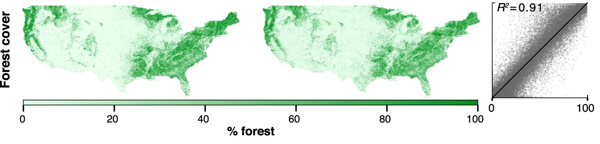
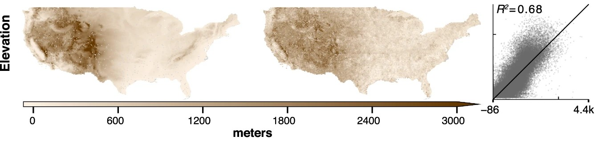
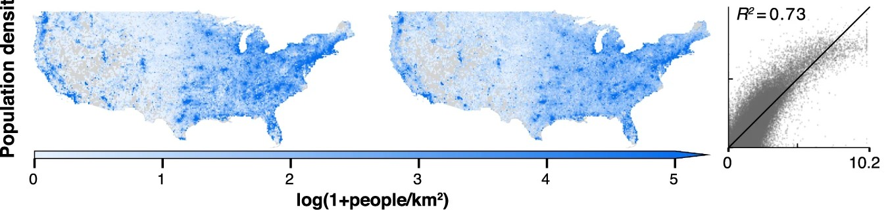
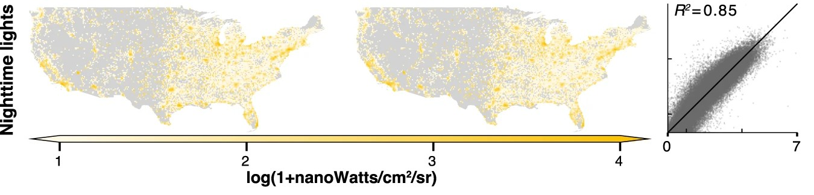
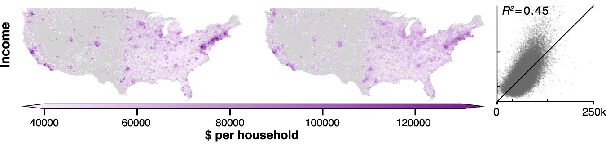
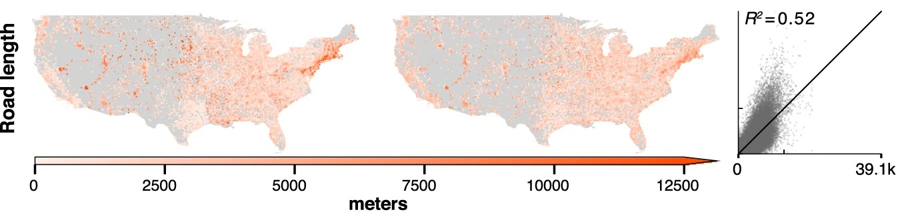
5.4.2 Going global
To test the global applicability of MOSAIKS, across a diverse set of outcomes, there were 2 primary things that needed to happen:
1. The creation of a global set of features
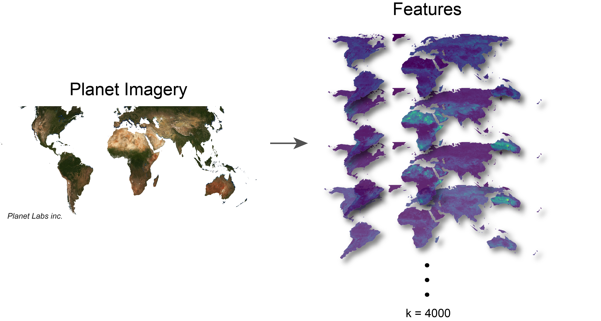
2. Collecting and curating a large set of outcomes with diversity in spatial structures and categories
| Category | Number of Labels | Example Label |
|---|---|---|
| Agricultural Assets | 5 | Agricultural land ownership |
| Agriculture | 16 | Maize yield |
| Built Infrastructure | 9 | Buildings |
| Demographics | 5 | Median age |
| Education | 10 | Expected years of schooling |
| Health | 15 | Malaria in children |
| Household Assets | 21 | Mobile phones |
| Income | 9 | Human development index |
| Natural Systems | 8 | Tree cover |
| Occupation | 17 | Unemployment |
With this data in hand, they were able to devise a few simple questions to test:
- Which variables can be effectively measured?
- What are the most compelling applications?
- What are the modes of failure?
5.5 Results
5.5.1 Overall performance
The results of the 100 maps experiment are shown in the scatter plot below (Figure 5.9). Each point in each scatter sub-plot represents a location in the study for a given label. The x-axis is the observed value of the label, and the y-axis is the MOSAIKS-predicted value. The diagonal 45° line in each sub-plot represents perfect prediction. The coefficient of determination (R²) is used here as the primary measure of accuracy.
A few broad insights stand out:
Substantial variation: Even within the same category, we see varying degrees of predictive power. For instance, in the “Agriculture” category, some labels (such as high-level yield averages) are predicted quite accurately, while others (like certain niche crops or management practices) remain more elusive.
Category differences: Some categories have consistently higher R² scores. For instance, “Natural Systems” (e.g., tree cover) often score better because the patterns are more directly visible from above—think of large, contiguous forest areas contrasted with open fields or urban centers. On the other hand, “Occupation” or “Demographics” include variables (like unemployment rates) that are largely socio-economic in nature, requiring more indirect and subtle cues.
Failure cases: A few outcomes show near-random performance, suggesting that the satellite imagery features alone are insufficient to capture their spatial patterns, or that the signals are drowned out by noise (see Failures below).
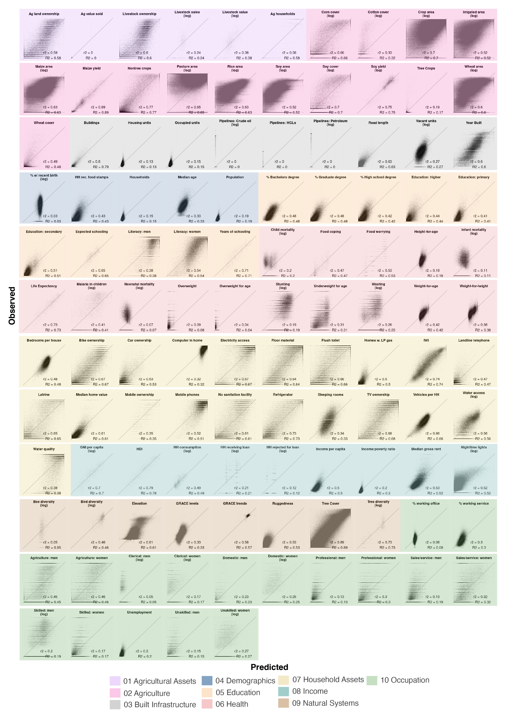
In the box plot (Figure 5.10) we see the distribution of R² values for each category across all 115 labels. This confirms the wide range of performance. Categories such as “Agriculture,” “Income,” and “Natural Systems” tend to have higher median R² values; categories such as “Health” and “Occupation” show more varied or lower overall performance.
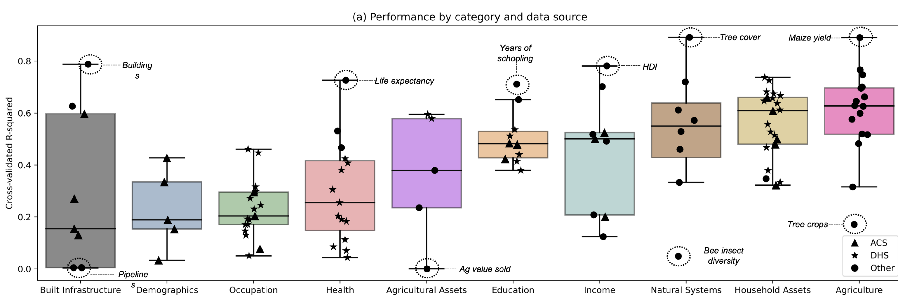
This heterogeneity underscores an important takeaway: MOSAIKS is not a one-size-fits-all solution. Some phenomena lend themselves to easier detection via satellite data than others. Still, the ability to simultaneously handle over 100 different outcomes from a single feature set is itself a testament to MOSAIKS’ flexibility and global applicability.
5.5.2 Successes
Maize yield is one of the best-performing labels in the 100 maps experiment, with an R² value of 0.81. This means that MOSAIKS can explain 81% of the variance in maize yield across the study locations using only satellite imagery features. The predicted values closely match the observed values, indicating that MOSAIKS is able to capture the underlying patterns in the data effectively.
In the left-hand scatter plot of Figure 5.11, the predicted yield values match well with the observed values, often clustering along the 45° line. On the right, we see that visually identifiable patterns in maize-growing regions are clearly reflected in the predicted maps. This strong alignment highlights how MOSAIKS can quickly yield robust predictions for outcomes that are clearly manifested in the satellite imagery.
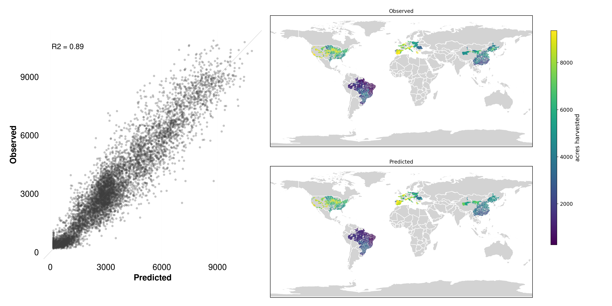
Crop yields are a classic use case for remote sensing because farmland for several reasons:
Direct visual signal: Agricultural fields have characteristic features, including crop texture, canopy cover, and phenological (growth stage) patterns, all of which can be captured in the spectral and spatial signals from satellite images.
Spatial contiguity: Large, contiguous fields of maize reduce noise and enable easier extraction of relevant features.
By measuring vegetation indices (e.g., NDVI, EVI), researchers gain insight into plant health, canopy density, and photosynthetic activity, all of which correlate strongly with agricultural productivity. This non-invasive, timely, and spatially comprehensive approach makes it invaluable for crop forecasting, detecting stress, and guiding resource allocation. Consequently, remote sensing has become a cornerstone in modern yield estimation methods for staple crops around the world. MOSAIKS is a natural extension of this trend, leveraging the latest in machine learning to extract actionable insights from satellite imagery.
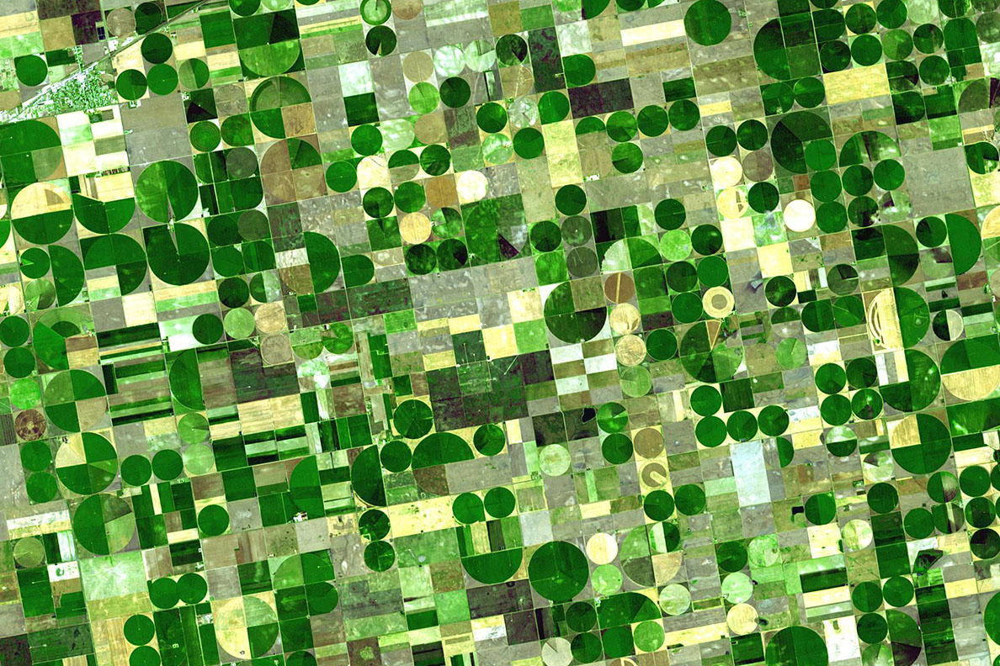
The maize yield data comes from crop yield data collected at the second administrative level (e.g., counties in the US) from the United States, China, Brazil and the European Union. Yields are calculated as harvested grain divided by the planted area, though in some cases harvested area is used instead of planted area. The data covers years from 1983-2009, with the most recent available year used for each location.
Another notable success is the International Wealth Index (IWI; Figure 5.13). This composite measure of household wealth is derived from a variety of indicators, such as housing quality, access to services, and ownership of durable goods. While wealth itself is not directly visible from space, the underlying factors that contribute to it often are. For example, wealthier areas tend to have more developed infrastructure, larger homes, and more vehicles—all of which leave distinct signatures in satellite imagery.
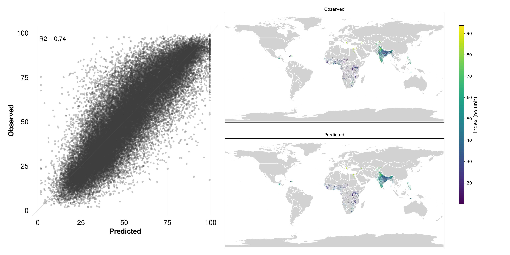
Despite being a composite measure of socioeconomic status, the IWI’s underlying indicators—housing conditions, access to utilities, and asset ownership—often manifest in the built environment as features that satellites capture well. For instance, wealthier neighborhoods typically exhibit a higher density of substantial buildings, paved roads, formal layouts, and visible amenities (e.g., swimming pools, parked vehicles). These cues translate into distinctive patterns in the spectral and spatial data extracted by MOSAIKS’ features. Furthermore, infrastructure development and housing materials (like metal roofs versus thatch) can produce detectable differences in reflectance, making it easier for the algorithm to discern socioeconomic gradients.
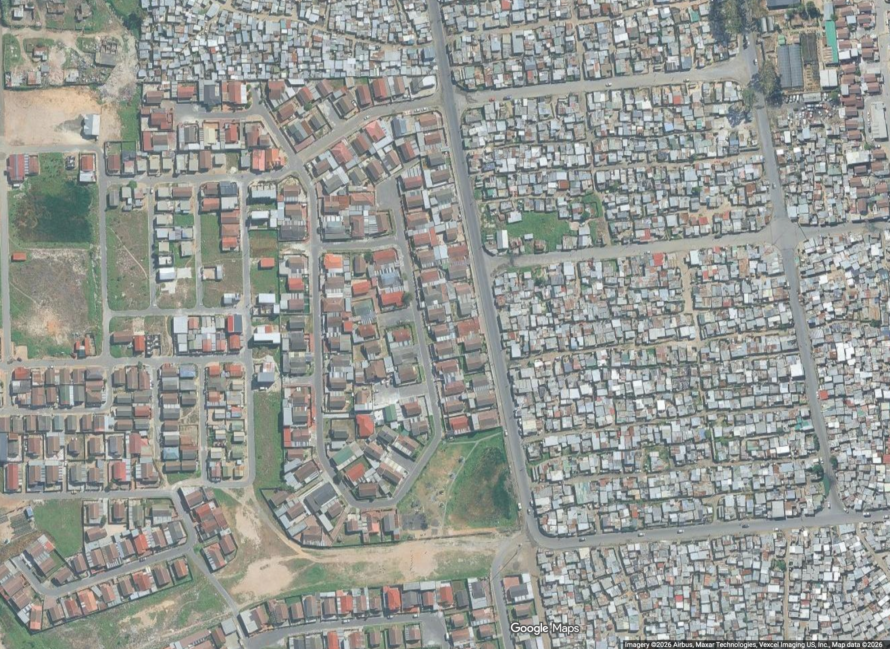
This highlights one of MOSAIKS’ core advantages: even when the target variable isn’t directly “visible,” the system can tease out its proxies from wide-ranging visual cues, leading to robust predictions of wealth indices around the globe.
The International Wealth Index (IWI) data comes from the Demographic and Health Surveys (DHS) program. The index is expressed as a value between 0 and 100, with higher values indicating greater wealth. It is computed from household data on ownership of consumer durables, housing characteristics, and access to basic services like water and electricity. The data is processed and provided by the Global Data Lab with permission from DHS, with values averaged across households within each survey cluster. Survey clusters are displaced by up to 2km for urban areas and up to 5km for rural areas to protect privacy, while remaining within the same administrative boundaries.
5.5.3 Failures
Certain labels show extremely low R² values, effectively indicating no predictive power under this approach.
Detecting pipelines from satellite imagery proves difficult with results showing essentially no predictive power, with an R² value near zero.
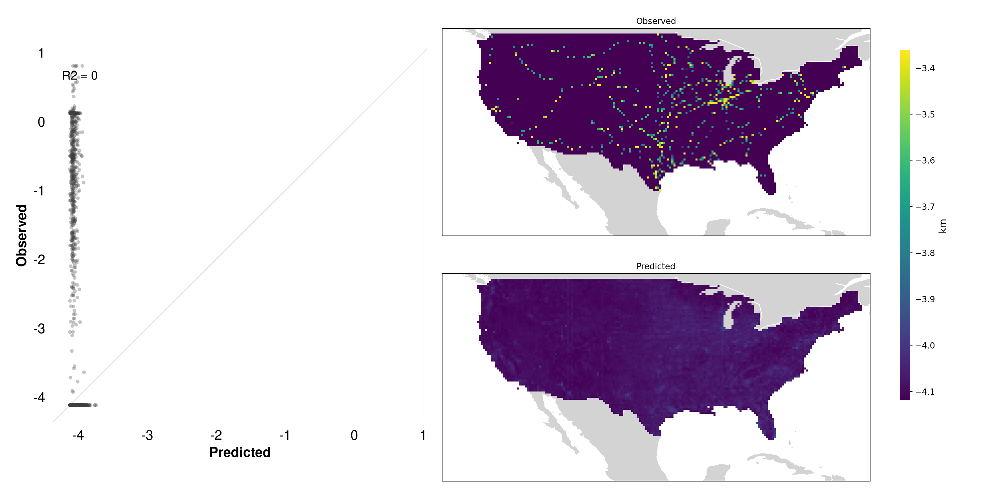
Unlike forests or agricultural fields, pipeline infrastructure is typically hidden from direct visual inspection—often located entirely underground or obscured in ways that do not provide surface indicators distinguishable in imagery (Figure 5.16).
Lack of visible features: There is no spectral or structural cue (e.g., coloration, texture, shape) that reliably indicates the presence of a pipeline.
Indirect clues Are unreliable: One might speculate that pipelines could follow roads or distinct corridors, but these correlations vary widely by region and do not consistently appear in the imagery.
Signal-to-noise ratio: In many areas, the pipeline corridor may appear visually indistinguishable from farmland or other vegetation, leaving little to no unique satellite signature.
As a result, MOSAIKS has little chance to identify and learn features predictive of such hidden infrastructure. This stands in stark contrast to more visually prominent targets like maize fields or tree cover.
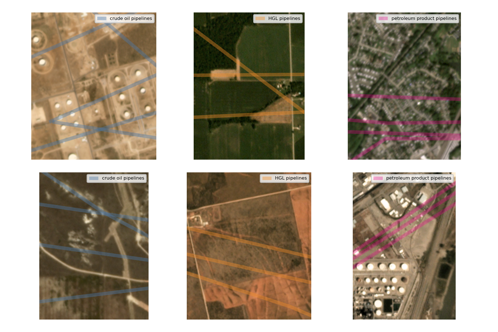
The pipeline data comes from the Energy Information Association (EIA) and includes interstate trunk lines and selected intrastate lines across three types: crude oil pipelines, hydrocarbon gas liquids (HGL) pipelines, and petroleum product pipelines. The data represents pipeline infrastructure as of January 2020 and covers the lower 48 United States. The variable measures the length in kilometers of each pipeline type within each grid cell.
Bee diversity is another label that shows essentially no predictive power, with an R² value near zero,indicating that the MOSAIKS predictions do not correlate with the observed bee diversity values.
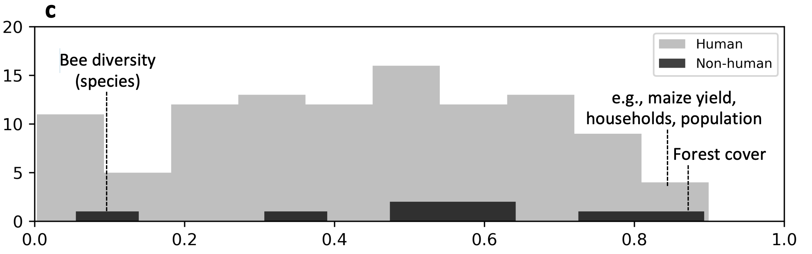
While bees play a crucial role in ecosystems and agriculture, their presence and diversity cannot be directly observed from satellite imagery. Several factors contribute to this limitation:
- Scale mismatch: Bees operate at a much finer spatial scale than the resolution of typical satellite imagery
- Indirect relationships: While bees rely on vegetation, the link between plant cover visible from space and bee populations is complex and varies by context
- Temporal dynamics: Bee populations fluctuate seasonally and can change rapidly, while imagery captures only static snapshots
- Hidden factors: Critical habitat features like nesting sites are often concealed under canopy or in small spaces invisible from above
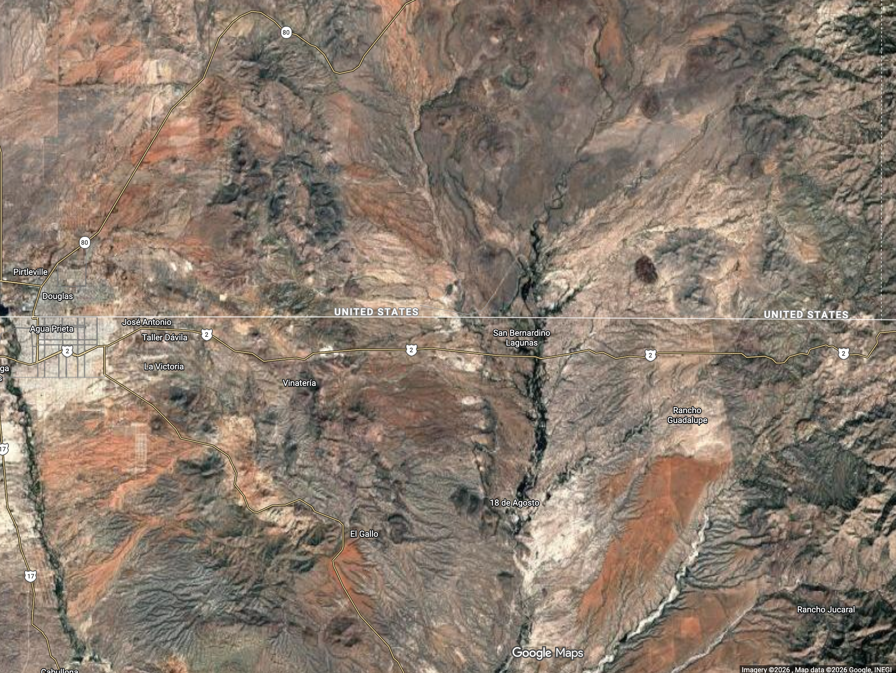
This case illustrates an important principle: MOSAIKS works best when predicting outcomes that have consistent, visible relationships with surface features captured in satellite imagery. When those relationships become too indirect or complex, performance typically suffers.
The bee diversity data comes from the US Geological Survey Eastern Ecological Science Center Native Bee Laboratory, which provides species occurrence records for native and non-native bees, wasps, and other insects collected through various trapping methods. Each record includes taxonomic identification and geographic coordinates. Using point data from 2009-2019, bee diversity is computed as a count of unique species documented within each 0.01° × 0.01° grid cell in North America (including U.S. territories and Minor Outlying islands). For cells with multiple sampling events, species are counted only once. Importantly, the database only includes records of species presence - absences are not recorded - which can lead to sampling bias in the diversity measures.
5.6 Types of variables
MOSAIKS can work with both continuous and categorical outcome variables, though the approach and evaluation metrics differ between these types.
This section provides a brief overview of the two types of variables and some of the metrics used to evaluate them. This will be covered in greater detail in Chapter 16.
5.6.1 Continuous variables
Continuous variables take numeric values along a spectrum, such as:
- Crop yields (e.g., tons per hectare)
- Population density (people per square kilometer)
- Forest cover percentage (0-100%)
- Income levels (dollars)
- Building height (meters)
For continuous variables, MOSAIKS typically uses regression approaches and evaluates performance using metrics like R² (coefficient of determination) or RMSE (root mean square error). The R² values reported throughout this chapter indicate the proportion of variance in the outcome that is explained by the MOSAIKS predictions.
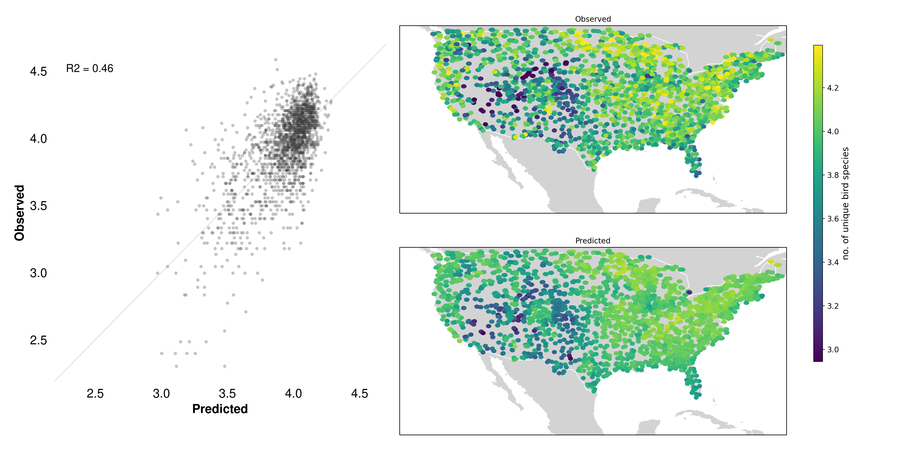
5.6.2 Categorical variables
Categorical variables group observations into distinct classes or categories, such as:
- Land use types (urban/agriculture/forest)
- Building types (residential/commercial/industrial)
- Crop types (maize/wheat/rice)
- Presence/absence of features (roads, buildings)
- Development categories (low/medium/high)
For categorical variables, MOSAIKS can be used in two ways:
Binary classification: For variables with two categories (e.g., presence/absence), MOSAIKS can output probability predictions between 0 and 1. Performance is typically evaluated using metrics like accuracy, precision, recall, or area under the receiver operating characteristic curve (AUC-ROC).
-
Multi-class classification: For variables with multiple categories, MOSAIKS can either:
- Use a one-vs-all approach, treating each category as a separate binary classification problem
- Output probabilities for each possible category that sum to 1
- Convert categories to numeric values if they have a natural ordering
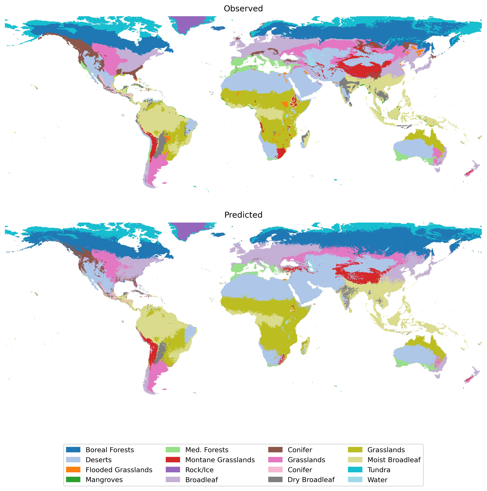
5.6.3 Choosing appropriate metrics
The choice of evaluation metric should match the type of variable:
| Variable Type | Common Metrics | Interpretation |
|---|---|---|
| Continuous | R², RMSE, MAE | R² ranges 0-1, higher is better |
| Binary | Accuracy, AUC-ROC | Range 0-1, higher is better |
| Multi-class | Accuracy, F1-score | Range 0-1, higher is better |
5.7 Summary
This exploration of over 100 different outcomes reveals several key insights about MOSAIKS:
Performance varies significantly: Predictive power ranges from very strong (R² > 0.8) to essentially random guessing, depending on the outcome
Direct visibility matters: Outcomes that are directly observable in imagery (like forest cover) or have strong visible proxies (like wealth indices) tend to perform better
Category patterns: Some categories like Natural Systems and Agriculture show consistently stronger performance than others like Health or Demographics
-
Practical implications: Understanding these patterns helps users:
- Set realistic expectations for new applications
- Identify which types of outcomes are most suitable
- Recognize when alternative approaches might be needed
These results demonstrate both the power and limitations of MOSAIKS. While it excels at predicting many important outcomes globally, it is not a universal solution. Success depends largely on whether the outcome of interest has a meaningful relationship with features visible in satellite imagery. Many of these concepts will hold true for general SIML applications beyond MOSAIKS as well.
In the next chapter, we’ll explore survey label data in more detail.